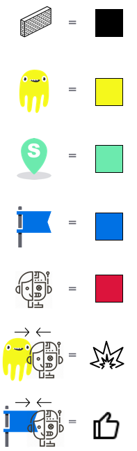

QUBE - Game Designer AI Tool
Fast
Slow
 Maze
Maze
Punishment value:
The negative value the agent (Q-learning algorithm) will receive if meet the ghostRange of movement:
The ghost moves randomly within this range based on the position you setGoal reward:
The positive reward the agent (Q-learnig algorithm) receives for finding the goalAgent
Discount factor γ:
It quantifies how much importance the algorithm give for future rewards. The lower the value is, the agent will tend to consider only immediate rewardsLearning Rate α :
Learning rate tells the magnitude of step that is taken towards the goal. The higher the value is, the larger extent the newly acquired information overrides old informationOur Level moderately punishes the agent for encountering ghosts which means they learn to avoid them moderately quick. Your ghosts are moving in a large area. It also gives a moderate low reward for reaching the goal which motivates your agent to move slightly slow.
Your agent values immediate rewards and will do better with closer goals. It also disregards previous attempts to reach the goal quicker.
Set obstacles where the agent (Q-learning algorithm) can't pass Set the ghost position, and the agent (Q-learning algorithm) will get punished (negative reward) if meet them Set the start position Set the goal (end) position
